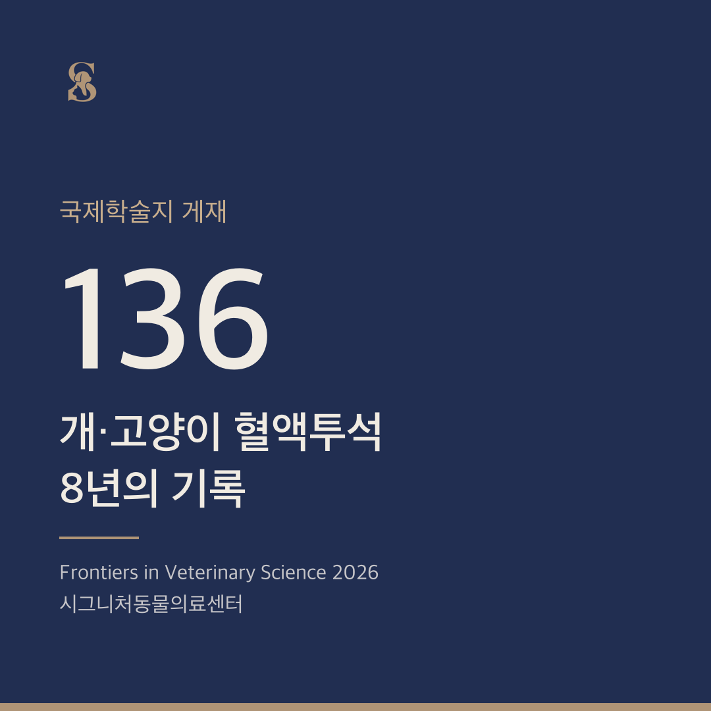
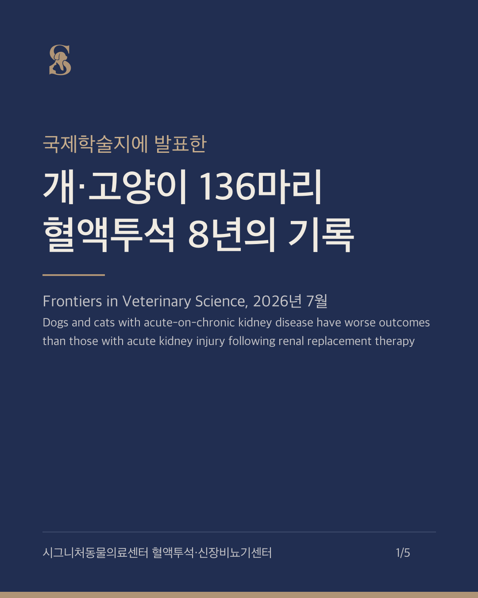
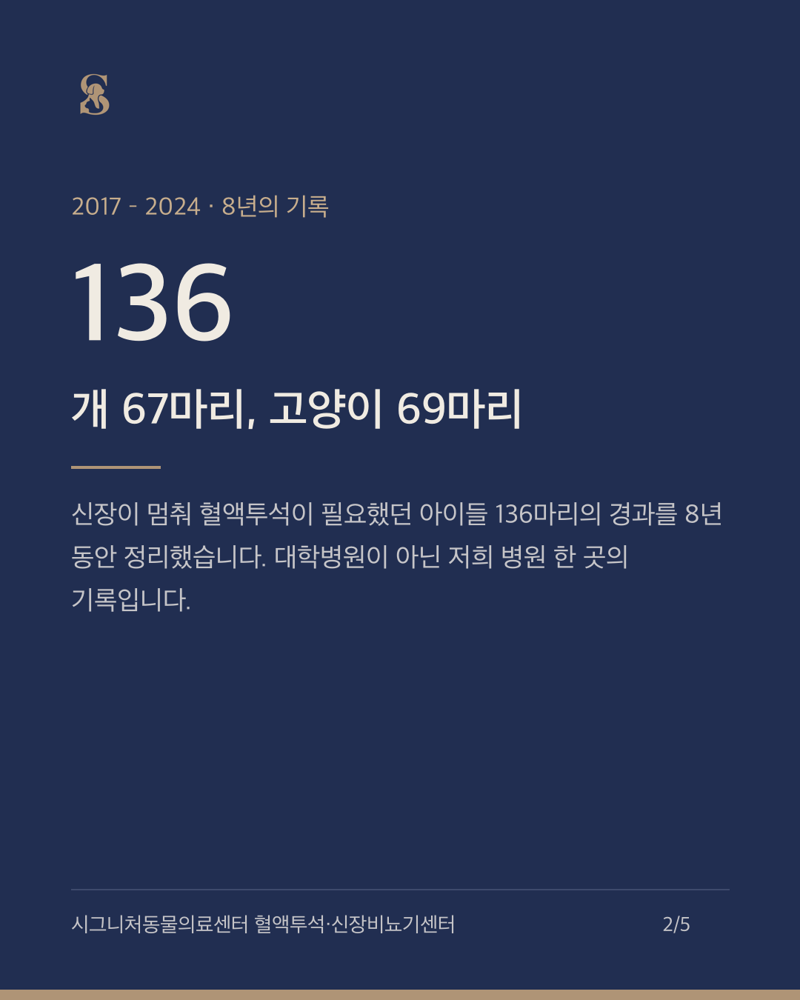
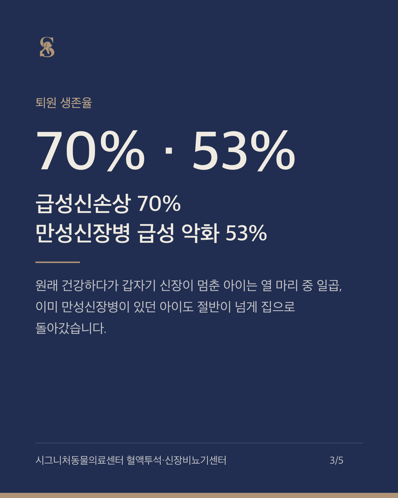
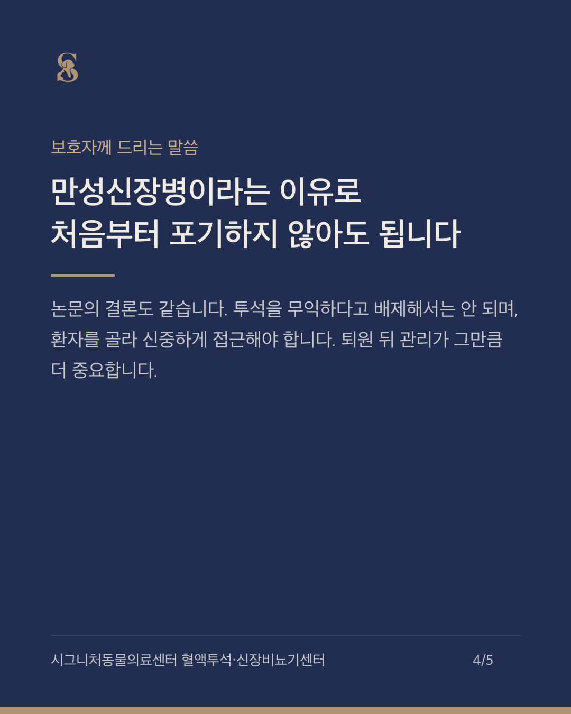
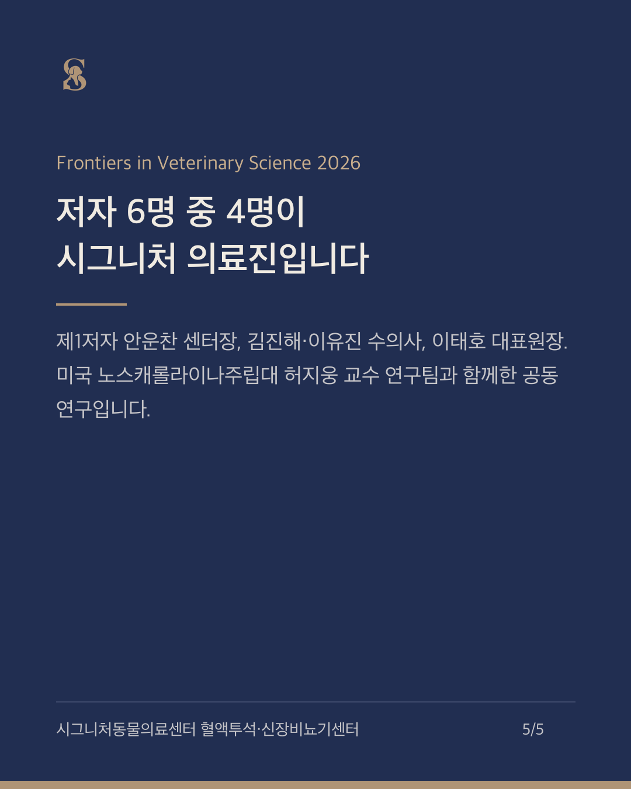

2026-09-05 · 업체 전달용 보고서, 인스타그램 카드 5장, 카카오톡 프로필 이미지, 네이버 블로그 원고. 검색 차단 페이지입니다.
병원 명의. 논문의 가치, 표현 규칙, 활용 요청을 담았습니다. 함께 보낼 별도 문서(온라인 노출 점검 결과)는 이미 전달드린 것입니다.
ISVPS 명칭, 마취 FAQ, 인스타그램 계정, 누적 250마리·900회까지 원장님 확인을 반영한 최종본입니다. 장비 대수는 확인되면 문장 하나만 추가하면 됩니다.






안녕하세요, 시그니처 동물의료센터입니다. 2017년부터 2024년까지 저희 혈액투석센터에서 신대체요법을 받은 개 67마리, 고양이 69마리, 모두 136마리의 8년 기록을 정리해 국제학술지 Frontiers in Veterinary Science에 발표했습니다. 1. 원래 건강하다가 갑자기 신장이 멈춘 급성신손상 환자는 70%가 퇴원했습니다. 2. 이미 만성신장병이 있던 상태에서 급성 악화가 겹친 환자도 53%가 집으로 돌아갔습니다. 3. 혈액투석이 필요할 만큼 위중한 환자에서 이 두 그룹을 비교한 연구는 이 논문이 처음이고, 국내 동물병원으로는 최초의 신대체요법 코호트 논문입니다(PubMed 기준). 4. 저자 6명 중 4명이 시그니처 의료진입니다. 제1저자 안운찬 센터장, 김진해·이유진 수의사, 이태호 대표원장이 함께했고, 미국 노스캐롤라이나주립대 허지웅 교수 연구팀과 공동으로 연구했습니다. 만성신장병이라는 이유만으로 투석을 처음부터 배제할 필요는 없습니다. 다만 투석은 신장이 회복할 시간을 버는 치료이므로 퇴원 뒤 관리가 더 중요합니다. 논문 원문: doi.org/10.3389/fvets.2026.1857111 24시간 응급·의뢰 02-549-0275 #강아지혈액투석 #고양이혈액투석 #동물병원혈액투석 #강아지신부전 #고양이신부전 #급성신손상 #만성신장병 #시그니처동물의료센터 #강남24시동물병원 #수의학
안녕하세요, 시그니처 동물의료센터입니다.
혈액투석 상담에서 가장 자주 듣는 말이 있습니다. "이미 신장이 안 좋은 아이인데, 투석을 해도 의미가 있을까요?" 이 질문에 저희는 이제 저희 환자들의 숫자로 답할 수 있습니다.
**결론부터 말씀드리면, 만성신장병이 있던 아이도 혈액투석을 받은 경우 절반이 넘는 53%가 살아서 집으로 돌아갔습니다.** 급성신손상만 있던 아이는 70%였습니다.
2017년부터 2024년까지 8년 동안 저희 병원에서 혈액투석(신대체요법)을 받은 개 67마리와 고양이 69마리, 모두 136마리의 경과를 정리해 올해 7월 국제학술지 Frontiers in Veterinary Science에 발표했습니다. 이 아이들을 두 그룹으로 나눴습니다. 원래 건강하다가 갑자기 신장이 멈춘 급성신손상(AKI) 70마리, 그리고 이미 만성신장병이 있는 상태에서 급성 악화가 겹친 경우(ACKD) 66마리입니다.
- 퇴원 생존율: 급성신손상 70%, 만성신장병 급성 악화 53%
- 개는 각각 67%와 48%, 고양이는 74%와 57%로 고양이가 조금 더 잘 회복했습니다
- 만성신장병이 있던 아이들은 급성신손상만 있던 아이들보다 평균 4년 정도 나이가 많았고(10.4세 대 6.3세), 퇴원할 때 신장 수치가 조금 더 높은 채로 집에 갔습니다
- 퇴원 후에는 차이가 있었습니다. 만성신장병 그룹의 중앙 생존기간은 57일(개는 33일)이었지만, 고양이는 절반 이상이 6년 넘게 생존해 중앙값을 구할 수 없었습니다
첫째, 만성신장병이라는 이유만으로 투석을 처음부터 배제할 필요는 없습니다. 논문의 결론도 같습니다. 투석을 무익한 치료로 치부해서는 안 되며, 환자를 골라 신중하게 접근해야 한다는 것입니다.
둘째, 투석은 신장을 고치는 치료가 아니라 원인을 치료하고 신장이 회복할 시간을 버는 치료입니다. 그래서 퇴원이 끝이 아니라 퇴원 후 관리가 더 중요합니다. 특히 만성신장병이 있던 아이는 더 그렇습니다.
셋째, 지금까지 쓰이던 급성신손상 예후 점수(Segev 점수)가 만성신장병 급성 악화 환자에게는 잘 맞지 않았습니다. 이런 아이들을 위한 별도의 예후 판단 도구가 필요하다는 뜻이고, 저희가 다음으로 풀어야 할 숙제입니다.
이 논문은 저희 병원 혈액투석·신장비뇨기센터 안운찬 센터장이 제1저자로 썼고, 김진해·이유진 수의사와 이태호 대표원장이 함께했습니다. 저자 여섯 명 중 네 명이 시그니처 의료진입니다. 미국 노스캐롤라이나주립대학교 수의과대학 허지웅 교수와 같은 대학의 김건 연구자가 공동 연구자로 참여했습니다. 대학병원이 아닌 동물병원 한 곳의 8년 기록이 국제학술지에 실린 것은 저희에게도 뜻깊은 일입니다. 국내 동물병원으로는 최초의 신대체요법 코호트 논문입니다(PubMed 기준).
혈액투석이 필요할 만큼 위중한 환자에서 만성신장병 급성 악화와 급성신손상의 결과를 비교한 연구는 이 논문이 처음입니다. 이전에 나온 만성신장병 급성 악화 연구들은 대부분 내과 치료로 회복한 환자를 다뤘기 때문에, 투석이 필요했던 아이들의 예후는 알려진 바가 없었습니다.
신장 수치가 갑자기 올랐거나, 이미 신장이 나쁜 아이가 갑자기 먹지 못하고 구토를 한다면 시간이 중요합니다. 24시간 응급 진료와 타 병원 의뢰를 받고 있습니다. 전화 02-549-0275.
논문 원문: Ahn W, Kim K, Kim J, Lee Y, Lee T, Her J. Dogs and cats with acute-on-chronic kidney disease have worse outcomes than those with acute kidney injury following renal replacement therapy. Frontiers in Veterinary Science 2026;13:1857111. https://doi.org/10.3389/fvets.2026.1857111
관련 기사: 데일리벳 2026-08-13, 신장질환으로 혈액투석 받은 국내 개·고양이 136마리의 생존율은? https://www.dailyvet.co.kr/news/academy/293233
요약과 해석에 오류가 있을 수 있습니다.
#강아지혈액투석 #고양이혈액투석 #동물병원혈액투석 #강아지신부전 #고양이신부전 #급성신손상 #만성신장병 #시그니처동물의료센터 #안운찬 #강남24시동물병원
이태호 원장 홈페이지: 언론 보도 목록에 데일리벳 기사 추가, 약력에 논문 4편 목록 추가. 안운찬 원장 홈페이지: 연구 성과 문단을 논문 수치·저자·원문 링크로 갱신.
{kind=link}